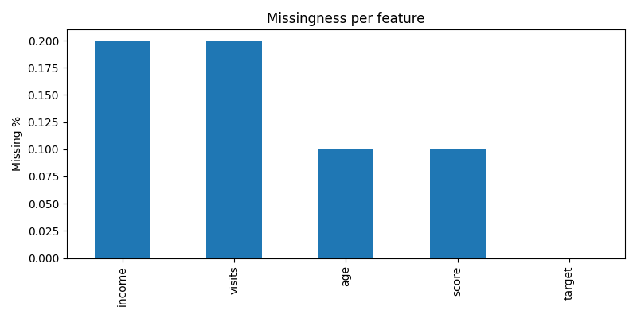
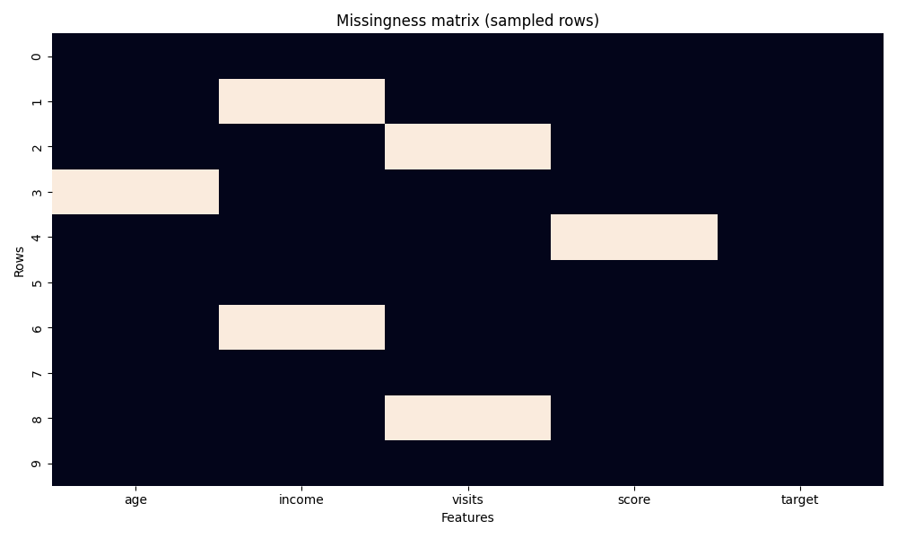

Missing Data Doctor
Task:
classification |
Target:
target
Missingness Summary
Column
Missing Count
Missing %
income
2
20.00%
visits
2
20.00%
age
1
10.00%
score
1
10.00%
target
0
0.00%
Visualizations
Missingness per Feature

Missingness Matrix (Sampled Rows)

Model Impact by Imputation Strategy
Imputer
AUC
Accuracy
simple
1.0000
0.6667
knn
1.0000
1.0000
iterative
1.0000
1.0000